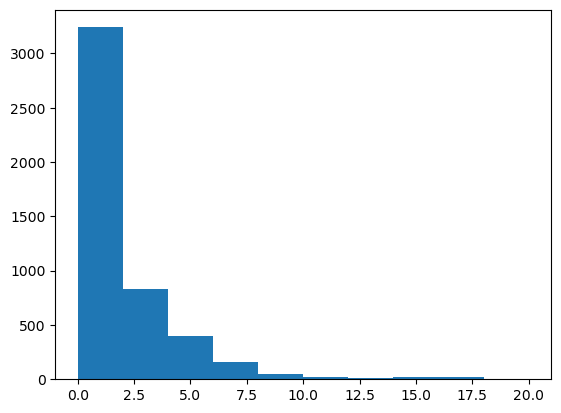
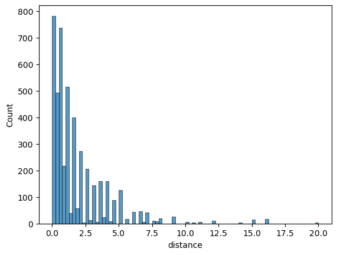

import numpy as np
import pandas as pdInstrumental variables
IV example on mock dataset
Constructing the dataset
Create four random series of length \(N=1000\)
- \(x\): education
- \(y\): salary
- \(z\): ambition
- \(q\): early smoking
such that:
- \(x\) and \(z\) cause \(y\)
- \(z\) causes \(x\)
- \(q\) is correlated with \(x\), not with \(z\)
A problem arises when the confounding factor \(z\) is not observed. In that case, we can estimate the direct effect of \(x\) on \(y\) by using \(q\) as an instrument.
Run the follwing code to create a mock dataset.
N = 100000
ϵ_z = np.random.randn(N)*0.1
ϵ_x = np.random.randn(N)*0.1
ϵ_q = np.random.randn(N)*0.01
ϵ_y = np.random.randn(N)*0.01z = 0.1 + ϵ_z
q = 0.5 + 0.1234*ϵ_x + ϵ_q
# here we must change the definition so that q affects x:
# x = 0.1 + z + ϵ_x
x = 0.1 + z + q + ϵ_x
y = 1.0 + 0.9*x + 0.4*z + ϵ_ydf = pd.DataFrame({
"x": x,
"y": y,
"z": z,
"q": q
})Describe the dataframe. Compute the correlations between the variables. Are they compatible with the hypotheses for IV?
Here are the results from the database:
df.describe()| x | y | z | q | |
|---|---|---|---|---|
| count | 100000.000000 | 100000.000000 | 100000.000000 | 100000.000000 |
| mean | 0.700385 | 1.670457 | 0.100148 | 0.500003 |
| std | 0.150426 | 0.165036 | 0.099989 | 0.015830 |
| min | 0.094732 | 1.001409 | -0.365794 | 0.432416 |
| 25% | 0.598821 | 1.559262 | 0.032510 | 0.489311 |
| 50% | 0.700130 | 1.669901 | 0.100245 | 0.499985 |
| 75% | 0.801383 | 1.781243 | 0.167538 | 0.510676 |
| max | 1.308864 | 2.358062 | 0.553339 | 0.571994 |
df.corr()| x | y | z | q | |
|---|---|---|---|---|
| x | 1.000000 | 0.981609 | 0.664405 | 0.617227 |
| y | 0.981609 | 1.000000 | 0.787542 | 0.505723 |
| z | 0.664405 | 0.787542 | 1.000000 | -0.003407 |
| q | 0.617227 | 0.505723 | -0.003407 | 1.000000 |
We observe: - cor(q, x) non zero: the instrument is relevant - close to zero: might be a weak instrument (we would need to check significance) - cor(q, z) = 0 : the instrument is really exogenous
OLS Regression
Use linearmodels to run a regression estimating the effect of \(x\) on \(y\) (note the slight API change w.r.t. statsmodels). Comment.
What is the problem with this regression? How can it be detected?
from linearmodels import OLS
model = OLS.from_formula("y ~ x", df)
res = model.fit()
res.summary| Dep. Variable: | y | R-squared: | 0.9636 |
| Estimator: | OLS | Adj. R-squared: | 0.9636 |
| No. Observations: | 100000 | F-statistic: | 2.64e+06 |
| Date: | Wed, Feb 21 2024 | P-value (F-stat) | 0.0000 |
| Time: | 15:10:57 | Distribution: | chi2(1) |
| Cov. Estimator: | robust | ||
| Parameter | Std. Err. | T-stat | P-value | Lower CI | Upper CI | |
| Intercept | 0.9162 | 0.0005 | 1928.2 | 0.0000 | 0.9153 | 0.9171 |
| x | 1.0769 | 0.0007 | 1624.8 | 0.0000 | 1.0756 | 1.0782 |
Regression is globally significant (p-value for Fisher test < 0.00001). The coefficient \(\beta=1.0999\) in front of \(x\) is also very significant at a 0.001% level but does not match the true model for \(y\) (y = 1.0 + 0.9*x + 0.4*z + ϵ_y).
Regress again \(y\) on \(x\), this time controling for missing variable \(z\).
from linearmodels import IV2SLS
formula = (
"y ~ x + z"
)
mod = IV2SLS.from_formula(formula, df)
res = mod.fit()
res| Dep. Variable: | y | R-squared: | 0.9964 |
| Estimator: | OLS | Adj. R-squared: | 0.9964 |
| No. Observations: | 100000 | F-statistic: | 2.729e+07 |
| Date: | Wed, Feb 21 2024 | P-value (F-stat) | 0.0000 |
| Time: | 15:10:59 | Distribution: | chi2(2) |
| Cov. Estimator: | robust | ||
| Parameter | Std. Err. | T-stat | P-value | Lower CI | Upper CI | |
| Intercept | 0.9998 | 0.0002 | 5755.9 | 0.0000 | 0.9995 | 1.0002 |
| x | 0.9003 | 0.0003 | 3219.2 | 0.0000 | 0.8998 | 0.9008 |
| z | 0.4000 | 0.0004 | 949.12 | 0.0000 | 0.3991 | 0.4008 |
id: 0x7f4a249d7ef0
Now we see that the coefficient in front of x is the correct one (that is 0.9).
Instrumental variable
Now we try to run a regression without knowing the value of z.
Make a causality graph, summarizing what you know from the equations.
The information about the model’s information structure can be summarized as:
graph TD; X–>Y; Z–>X; Z–>Y; Q–>X;
Use \(q\) to instrument the effect of x on y. Comment.
from linearmodels.iv import IV2SLS
formula = "y ~ 1 + [x ~ q]"
model = IV2SLS.from_formula(formula, df)
result = model.fit()
result| Dep. Variable: | y | R-squared: | 0.9372 |
| Estimator: | IV-2SLS | Adj. R-squared: | 0.9372 |
| No. Observations: | 100000 | F-statistic: | 4.067e+05 |
| Date: | Wed, Feb 21 2024 | P-value (F-stat) | 0.0000 |
| Time: | 15:16:05 | Distribution: | chi2(1) |
| Cov. Estimator: | robust | ||
| Parameter | Std. Err. | T-stat | P-value | Lower CI | Upper CI | |
| Intercept | 1.0409 | 0.0010 | 1046.4 | 0.0000 | 1.0389 | 1.0428 |
| x | 0.8989 | 0.0014 | 637.73 | 0.0000 | 0.8962 | 0.9017 |
Endogenous: x
Instruments: q
Robust Covariance (Heteroskedastic)
Debiased: False
id: 0x7f4a249d63c0
We observe that the result is, again, the correct one. This is especially impressive since we didn’t have access to the confounding factor z and couldn’t add it to the regression. Instead, we had another source of randomness q that we used to instrument the regression.
Return on Education
We follow the excellent R tutorial from the (excellent) Econometrics with R book.
The goal is to measure the effect of schooling on earnings, while correcting the endogeneity bias by using distance to college as an instrument.
Download the college distance using get_dataset function and make a nice dataframe. Describe the dataset. Plot a histogram of distance (you can use matplotlib’s hist function or seaborn).
https://vincentarelbundock.github.io/Rdatasets/datasets.html
import statsmodels.api as sm
ds = sm.datasets.get_rdataset("CollegeDistance", "AER")# the dataframe must be retrieved from the dataset object
df = ds.datadf.head()| gender | ethnicity | score | fcollege | mcollege | home | urban | unemp | wage | distance | tuition | education | income | region | |
|---|---|---|---|---|---|---|---|---|---|---|---|---|---|---|
| rownames | ||||||||||||||
| 1 | male | other | 39.150002 | yes | no | yes | yes | 6.2 | 8.09 | 0.2 | 0.88915 | 12 | high | other |
| 2 | female | other | 48.869999 | no | no | yes | yes | 6.2 | 8.09 | 0.2 | 0.88915 | 12 | low | other |
| 3 | male | other | 48.740002 | no | no | yes | yes | 6.2 | 8.09 | 0.2 | 0.88915 | 12 | low | other |
| 4 | male | afam | 40.400002 | no | no | yes | yes | 6.2 | 8.09 | 0.2 | 0.88915 | 12 | low | other |
| 5 | female | other | 40.480000 | no | no | no | yes | 5.6 | 8.09 | 0.4 | 0.88915 | 13 | low | other |
df.describe()| score | unemp | wage | distance | tuition | education | |
|---|---|---|---|---|---|---|
| count | 4739.000000 | 4739.000000 | 4739.000000 | 4739.000000 | 4739.000000 | 4739.000000 |
| mean | 50.889029 | 7.597215 | 9.500506 | 1.802870 | 0.814608 | 13.807765 |
| std | 8.701910 | 2.763581 | 1.343067 | 2.297128 | 0.339504 | 1.789107 |
| min | 28.950001 | 1.400000 | 6.590000 | 0.000000 | 0.257510 | 12.000000 |
| 25% | 43.924999 | 5.900000 | 8.850000 | 0.400000 | 0.484990 | 12.000000 |
| 50% | 51.189999 | 7.100000 | 9.680000 | 1.000000 | 0.824480 | 13.000000 |
| 75% | 57.769999 | 8.900000 | 10.150000 | 2.500000 | 1.127020 | 16.000000 |
| max | 72.809998 | 24.900000 | 12.960000 | 20.000000 | 1.404160 | 18.000000 |
How is education encoded? Create a binary variable education_binary to replace it.
df['income'].unique()
# education variable takes string values ("high" or "low"). array(['high', 'low'], dtype=object)# we need to convert them into 1 and 0 first
df['income_binary'] = (df['income'] == "high")*1# other option 1
df['incomeb'] = df['income'].map({'high' : 1, 'low': 0})# other option 2
df['incomeb'] = (df['income'] == 'high')*1Plot an histogram of distance to college.
from matplotlib import pyplot as plt
plt.hist(df['distance'])(array([3241., 831., 399., 156., 45., 17., 10., 19., 17.,
4.]),
array([ 0., 2., 4., 6., 8., 10., 12., 14., 16., 18., 20.]),
<BarContainer object of 10 artists>)
# same with seaborn
import seaborn as sns
sns.histplot(df['distance'])
Run the naive regression \(\text{incomeb}=\beta_0 + \beta_1 \text{education} + u\) using linearmodels. Comment.
from linearmodels.iv import IV2SLS # we can use IV2SLS instead of OLS to run regular regressions
formula = "incomeb ~ education"
model = IV2SLS.from_formula(formula, df)
result = model.fit()
result| Dep. Variable: | incomeb | R-squared: | 0.0480 |
| Estimator: | OLS | Adj. R-squared: | 0.0478 |
| No. Observations: | 4739 | F-statistic: | 227.43 |
| Date: | Wed, Feb 21 2024 | P-value (F-stat) | 0.0000 |
| Time: | 15:17:44 | Distribution: | chi2(1) |
| Cov. Estimator: | robust | ||
| Parameter | Std. Err. | T-stat | P-value | Lower CI | Upper CI | |
| Intercept | -0.4780 | 0.0499 | -9.5702 | 0.0000 | -0.5759 | -0.3801 |
| education | 0.0555 | 0.0037 | 15.081 | 0.0000 | 0.0483 | 0.0627 |
id: 0x7f4a182e7da0
We find that education explains higher income with a significant, but low coefficient 0.05.
Augment the regression with unemp, hispanic, af-am, female and urban. Notice that categorical variables are encoded automatically. What are the treatment values? Change it using the syntax (C(var,Treatment='ref'))
from linearmodels.iv import IV2SLS
formula = "incomeb ~ education + unemp + gender + ethnicity"
model = IV2SLS.from_formula(formula, df)
result = model.fit()
result| Dep. Variable: | incomeb | R-squared: | 0.0811 |
| Estimator: | OLS | Adj. R-squared: | 0.0802 |
| No. Observations: | 4739 | F-statistic: | 443.38 |
| Date: | Wed, Feb 21 2024 | P-value (F-stat) | 0.0000 |
| Time: | 15:17:47 | Distribution: | chi2(5) |
| Cov. Estimator: | robust | ||
| Parameter | Std. Err. | T-stat | P-value | Lower CI | Upper CI | |
| Intercept | -0.4361 | 0.0533 | -8.1797 | 0.0000 | -0.5406 | -0.3316 |
| education | 0.0511 | 0.0037 | 13.982 | 0.0000 | 0.0439 | 0.0582 |
| unemp | -0.0111 | 0.0022 | -4.9609 | 0.0000 | -0.0155 | -0.0067 |
| gender[T.male] | 0.0484 | 0.0128 | 3.7866 | 0.0002 | 0.0234 | 0.0735 |
| ethnicity[T.hispanic] | -0.0249 | 0.0185 | -1.3425 | 0.1794 | -0.0612 | 0.0114 |
| ethnicity[T.other] | 0.1347 | 0.0163 | 8.2871 | 0.0000 | 0.1029 | 0.1666 |
id: 0x7f4a18106ff0
df['ethnicity'].unique()array(['other', 'afam', 'hispanic'], dtype=object)In the regression above, some variables have been created for each value of the categorical vairables (save for the reference value which doesn’t appear). In the case of variable ethnicity, we see that hispanic and other are two of the three values taken by variable ethnicity. This means that value afam was taken as reference.
We can change the reference variable as follows:
# needed only if you use the function Treatment in the formulas
from linearmodels.iv import IV2SLS
formula = "incomeb ~ education + unemp + C(gender) + C(ethnicity,Treatment(reference='other'))"
model = IV2SLS.from_formula(formula, df)
result = model.fit()
result| Dep. Variable: | incomeb | R-squared: | 0.0811 |
| Estimator: | OLS | Adj. R-squared: | 0.0802 |
| No. Observations: | 4739 | F-statistic: | 443.38 |
| Date: | Wed, Feb 21 2024 | P-value (F-stat) | 0.0000 |
| Time: | 15:17:51 | Distribution: | chi2(5) |
| Cov. Estimator: | robust | ||
| Parameter | Std. Err. | T-stat | P-value | Lower CI | Upper CI | |
| Intercept | -0.3014 | 0.0540 | -5.5788 | 0.0000 | -0.4073 | -0.1955 |
| education | 0.0511 | 0.0037 | 13.982 | 0.0000 | 0.0439 | 0.0582 |
| unemp | -0.0111 | 0.0022 | -4.9609 | 0.0000 | -0.0155 | -0.0067 |
| C(gender)[T.male] | 0.0484 | 0.0128 | 3.7866 | 0.0002 | 0.0234 | 0.0735 |
| C(ethnicity, Treatment(reference='other'))[T.afam] | -0.1347 | 0.0163 | -8.2871 | 0.0000 | -0.1666 | -0.1029 |
| C(ethnicity, Treatment(reference='other'))[T.hispanic] | -0.1596 | 0.0149 | -10.710 | 0.0000 | -0.1888 | -0.1304 |
id: 0x7f4a181d6630
Comment the results and explain the endogeneity problem
Adding additional regressors has increased the fit (adj. R^2 from 0.04 to 0.08) without changing the coefficient on the education level. This would imply that regression is robust.
However, we might have an endogeneity issue with some potential other factors explaining both income level and salary (cf many discussions in the course).
Explain why distance to college might be used to instrument the effect of schooling.
Assuming that the decision to live in a given county does not depend on the presence of a college nearby, the distance to college should be exogenous.
The distance to college is probably correlated with the decision to go so the instrument should have some power (opposite of weak)
Run an IV regression, where distance is used to instrument schooling.
look at: https://bashtage.github.io/linearmodels/ (two-stage least squares)
from linearmodels.iv import IV2SLS
formula = "incomeb ~ [education ~ distance] + unemp + C(gender) + C(ethnicity, Treatment(reference='other'))"
model = IV2SLS.from_formula(formula, df)
result = model.fit()
result| Dep. Variable: | incomeb | R-squared: | -0.1339 |
| Estimator: | IV-2SLS | Adj. R-squared: | -0.1351 |
| No. Observations: | 4739 | F-statistic: | 1748.5 |
| Date: | Wed, Feb 21 2024 | P-value (F-stat) | 0.0000 |
| Time: | 15:18:14 | Distribution: | chi2(6) |
| Cov. Estimator: | robust | ||
| Parameter | Std. Err. | T-stat | P-value | Lower CI | Upper CI | |
| unemp | -0.0100 | 0.0025 | -3.9704 | 0.0001 | -0.0149 | -0.0051 |
| C(gender)[T.female] | -1.9566 | 0.5039 | -3.8830 | 0.0001 | -2.9441 | -0.9690 |
| C(gender)[T.male] | -1.9109 | 0.5042 | -3.7897 | 0.0002 | -2.8991 | -0.9226 |
| C(ethnicity, Treatment(reference='other'))[T.afam] | -0.0753 | 0.0259 | -2.9005 | 0.0037 | -0.1261 | -0.0244 |
| C(ethnicity, Treatment(reference='other'))[T.hispanic] | -0.1247 | 0.0203 | -6.1432 | 0.0000 | -0.1645 | -0.0849 |
| education | 0.1692 | 0.0358 | 4.7261 | 0.0000 | 0.0990 | 0.2393 |
Endogenous: education
Instruments: distance
Robust Covariance (Heteroskedastic)
Debiased: False
id: 0x7f4a17f31190
Comment the results.
The estimate we get for the return on education is three times higher than without the instrument and highly significant.